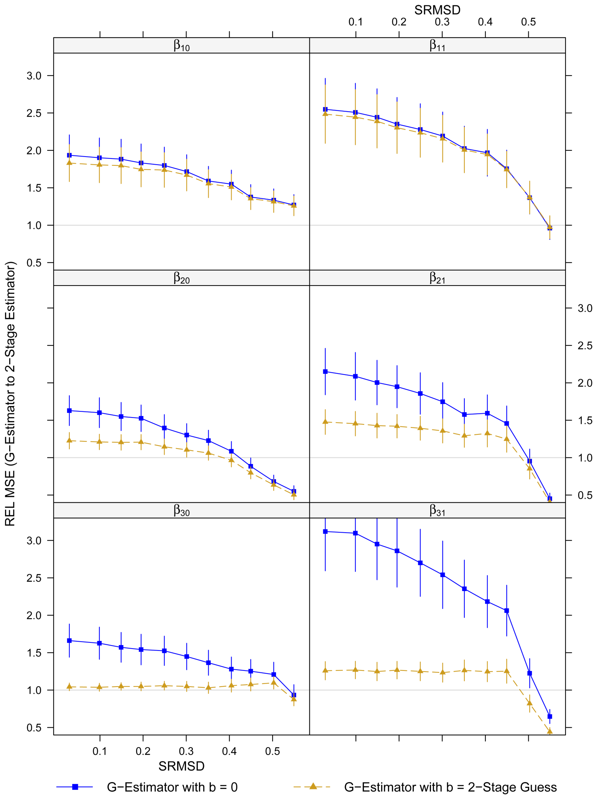

출처 — 본 포스트는 Daniel Almirall, Thomas Ten Have, Susan A. Murphy의 논문 Structural Nested Mean Models for Assessing Time-Varying Effect Moderation(Biometrics 66(1), 2010)을 NIH Public Access 저자 원고(PMC 2010년 5월 25일 공개본)를 기준으로 재구성한 것입니다. 원문이 참조하는 부록(일반 \(K\) 시점 모형)과 웹 보충 자료(다변량 \(S_t\) 확장, 표준오차 공식)는 이 판본에 실려 있지 않아 다루지 않습니다.
논문 정보 (Paper Information)
- 제목: Structural Nested Mean Models for Assessing Time-Varying Effect Moderation
- 저자: Daniel Almirall, Thomas Ten Have, Susan A. Murphy
- 소속: Durham VA Medical Center 일차의료 보건서비스연구센터 · Duke University Medical Center 생물통계·생물정보학과(Almirall) / University of Pennsylvania 임상역학·생물통계센터(Ten Have) / University of Michigan 통계학과 · 사회연구소(Murphy)
- 출처: Biometrics, 66(1), 131–139, 2010년 3월. doi:10.1111/j.1541-0420.2009.01238.x
- 키워드: 인과추론(causal inference), 효과 수정(effect modification), 추정방정식(estimating equations), G-추정(G-estimation), 2단계 추정(2-stage estimation), 시변 처치(time-varying treatment), 시변 공변량(time-varying covariates), 편향–분산 상충(bias-variance trade-off)
한 줄 요약 (TL;DR)
“조절변수가 앞선 처치의 결과이기도 하다면, 상호작용 항을 넣은 회귀 대신 시점별 조건부 중간 인과효과를 SNMM으로 모형화해야 한다.”
시변 조절변수 \(S_2\)를 회귀식에 그대로 넣으면 앞선 처치 \(A_1\)의 효과 일부가 잘려 나가고, \(S_2\)와 결과의 미지의 공통 원인 때문에 편향이 생깁니다. 이 논문은 각 시점 처치의 효과를 그 시점 이전의 조절변수 이력에 조건부로, 그리고 미래 처치를 0에 고정한 채로 정의한 조건부 중간 인과효과를 Robins의 구조적 내포 평균 모형(SNMM) 안에 배치합니다. 추정 방법으로는 장애 함수까지 모수적으로 모형화하는 2단계 회귀 추정량을 새로 제안하고, 장애 함수의 올바른 모형 없이도 일치성을 갖는 Robins의 G-추정량과 비교합니다. 시뮬레이션은 장애 함수 오지정이 중간 수준(SRMSD ≈ 0.5)에 이르기 전까지 2단계 추정량이 MSE에서 우세하고, 2단계 추정량이 G-추정량에 필요한 \(b_t\) 추측값으로도 유용함을 보이며, PROSPECT 우울증 자료로 방법을 예시합니다.
1. 서론 (Introduction)
효과 조절과 상호작용 항
이 논문의 관심사는 처치의 인과효과가 어떤 변수의 수준에 따라 커지거나 작아지는가입니다. 이를 효과 조절(effect moderation) 또는 효과 수정(effect modification)이라고 부릅니다.
- 전통적인 접근은 처치 이전에 함께 측정된 변수 \(S\)의 수준별로 모집단을 나누고, 처치 \(A\)가 결과 \(Y\)에 미치는 인과효과가 \(S\)의 수준에 따라 어떻게 달라지는지 봅니다.
- 실무에서는 \((S, A)\)가 주어졌을 때 \(Y\)의 회귀모형에 처치–조절변수 상호작용 항(treatment-moderator interaction term), 예컨대 \(A \times S\)를 넣어 효과 조절을 평가하는 것이 일반적입니다(Baron and Kenny, 1986; Kraemer et al., 2002).
시변 상황의 기회와 난점
시변(time-varying) 상황의 특징은 처치(원인 \(A\))와 조절변수 후보 집합(\(S\))이 모두 시간에 따라 변한다는 점입니다. 이 특징은 실증 연구의 기회이면서 방법론적 과제이기도 합니다.
- 기회: 시변 자료에서는 더 다양하고 흥미로운 질문을 던질 수 있습니다. 동기 예제인 PROSPECT 연구(Bruce and Pearson, 1999; Bruce et al., 2004)에서는 시간이 흐르면서 일부 환자가 정신건강 전문의의 우울증 치료에서 빠져나갑니다. 시변 자살 사고(suicidal ideation) 정보를 쓰면 “치료에서 일찍 빠지는 것과 나중에 빠지는 것이 우울증 중증도 점수에 미치는 영향이 시변 자살 사고에 따라 어떻게 달라지는가”를 물을 수 있습니다.
- 난점: 미래 처치의 효과를 조절하는 변수가 그 자체로 앞선 처치의 결과일 수 있습니다(Robins, 1987, 1989b, 1994, 1997). PROSPECT에서는
- 두 번째 방문 시점의 자살 사고 \(S_2\)가 두 번째 방문 이후의 치료 이탈 \(A_2\)가 우울증 중증도 \(Y\)에 미치는 효과를 조절하고,
- 동시에 기준 방문 이후의 치료 이탈 \(A_1\)이 두 번째 방문 시점의 자살 사고 \(S_2\)에 영향을 줍니다.
이런 상황에서 처치–조절변수 상호작용 틀을 단순히 확장해 다음과 같은 회귀모형을 쓴다고 해 봅시다.
\[ \begin{aligned} & E(Y \mid S_1, A_1, S_2, A_2) \\ &\quad = \beta_0 + \eta_1 S_1 + \beta_1 A_1 + \eta_2 S_2 + \beta_2 A_2 \\ &\qquad + \beta_3 A_1 S_1 + \beta_4 A_1 S_2 + \beta_5 A_2 S_2 + \beta_6 A_1 A_2 + \eta_3 S_1 S_2 \end{aligned} \tag{1} \]
이 순진한(naïve) 확장은 인과추론에 적어도 두 가지 문제를 일으킵니다.
- 효과의 절단: \(S_2\)에 조건화하면 \(A_1\)이 \(S_2\)를 거쳐 \(Y\)에 미치는 효과가 모두 잘려 나갑니다. \(A_1 \times S_1\) 상호작용 효과 가운데 \(S_2\)를 경유하는 몫도 마찬가지입니다.
- 공통 원인에 의한 편향: \(S_2\)와 \(Y\)에는 알려지지 않은 공통 원인이 있을 가능성이 높습니다. 그래서 처치 \(A_1\)의 결과인 \(S_2\)에 조건화하면 \(A_1\) 항의 계수에 편향이 생길 수 있습니다. 결국 \(A_1\)과 그 상호작용 계수(예: \(\beta_1\), \(\beta_3\))는 오직 \(A_1\)이 \(S_2\)에 영향을 주고 \(S_2\)와 \(Y\)가 미지의 공통 원인을 공유한다는 이유만으로 \(Y\)와 상관되어(또는 상관되지 않아) 보일 수 있습니다. 미지의 공통 원인을 \(U\)라 적으면 \(A_1 \to S_2 \leftarrow U \to Y\)에서 \(S_2\)가 충돌자(collider)인 구조입니다.
두 문제는 \(A_1\)이나 \(A_2\)가 무작위 배정되었는지와 무관하게 생길 수 있습니다(Robins, 1987, 1989b, 1994, 1997).
조건부 중간 인과효과와 이 논문의 기여
두 난점을 함께 피하면서 시변 효과 조절을 연구하는 틀이 각 시점의 조건부 중간 인과효과(conditional intermediate causal effect)입니다.
- 이 인과효과들은 Robins의 구조적 내포 평균 모형(Structural Nested Mean Model, SNMM)(Robins, 1994)의 구성 요소입니다.
- 각 시간 구간에서 처치의 평균 효과를 그 구간 이전에 얻을 수 있는 조절변수의 함수로 분리해 냅니다.
논문의 기여는 네 가지입니다.
- 시변 효과 조절을 평가하는 데 Robins의 SNMM을 쓰는 방법을 명확히 하고 예시합니다.
- SNMM 모수를 위한 2단계 모수적 회귀 추정량(2-Stage parametric regression estimator)을 제안합니다.
- 제안한 모수적 추정량을 Robins의 준모수적 G-추정량(semi-parametric G-Estimator)(Robins, 1994)과 편향–분산 상충 관점에서 비교합니다.
- 2단계 추정량으로 G-추정량에 필요한 질 좋은 시작값(starting values)을 얻는 방법을 제시합니다.
2. 시변 처치와 시변 조절변수에서의 효과 조절 (Effect Moderation with Time-varying Treatment and Time-varying Moderators)
2.1 표기와 잠재적 결과 (Notation and Potential Outcomes)
구조적 모수를 정의하고 타당한 인과추론에 필요한 구조적 가정을 적기 위해 잠재적 결과(potential outcomes) 틀을 씁니다(Rubin, 1974; Holland, 1986; Robins, 1987, 1989a, 1994, 1997, 1999).
- 시간 구간: 연구 대상 구간은 \(K\)개이며 \(t = 1, \dots, K\)입니다.
- 처치: 구간 \(t\)의 처치를 \(a_t\)로, \(K\)개 구간의 처치 패턴(벡터)을 \(\bar{a}_K = (a_1, \dots, a_K)\)로 적습니다. \(a_t = 0\)은 표준(기준) 처치를 뜻합니다. 가능한 모든 처치 벡터의 가산 집합을 \(\mathcal{A}_K\)라 합니다.
- 잠재적 반응: 처치 벡터의 각 고정값 \(\bar{a}_K\)에 대응해, 반사실(counterfactual)일 수도 있는 잠재적 중간 반응 \(\{S_2(a_1), \dots, S_K(\bar{a}_{K-1})\}\)과 잠재적 최종 반응 \(Y(\bar{a}_K)\)를 상정합니다. 예컨대 처치 패턴 \(\bar{a}_t\)를 따랐다면 \(t\)번째 구간 끝에 나타났을 반응이 \(S_{t+1}(\bar{a}_t)\)입니다(원문은 이 예시 문장에서 시점 첨자 없이 \(S(\bar{a}_t)\)로 적습니다).
- 잠재적 반응 전체: 한 대상자의 중간·최종 잠재적 반응 전체를 다음과 같이 적습니다.
\[ O = \{S_2(a_1), S_3(\bar{a}_2), \dots, S_K(\bar{a}_{K-1}), Y(\bar{a}_K) : \bar{a}_K \in \mathcal{A}_K\} \]
- 조절변수: 중간 결과 \(S\)들이 \(\bar{a}_K\)가 \(Y(\bar{a}_K)\)에 미치는 효과의 시변 조절변수 후보(putative time-varying moderators)입니다. 기준 시점의 조절변수 후보는 벡터 \(S_1\)으로 적습니다. \(S_t(\bar{a}_{t-1})\)이 \((a_t, \dots, a_K)\)의 효과를 “조절한다”는 말의 정확한 의미는 아래 SNMM에서 정해집니다.
2.2 조건부 중간 인과효과 (The Conditional Intermediate Causal Effects)
이제부터는 단순화를 위해 \(K = 2\)인 경우에 집중합니다. 다루는 대상은 \((S_1, a_1, S_2(a_1), a_2, Y(a_1, a_2))\)입니다.
- 반응 \(Y(a_1, a_2)\)는 유계가 아닌 지지집합을 갖는 연속형으로 둡니다.
- \(\bar{a}_K\)와 \(S_K(\bar{a}_{K-1})\)의 함수로서 반응의 평균만 모형화합니다. 처치나 공변량이 반응의 분산에 미치는 효과는 다루지 않습니다.
평균 인과효과의 분해 (식 (2))
\(\bar{a}_2\)가 \(Y(a_1, a_2)\)에 미치는 평균 인과효과는 기준 처치 \((0, 0)\)과의 대비 \(E[Y(a_1, a_2) - Y(0, 0)]\)입니다. 조절변수 이력 \(\bar{S}_2(a_1) = (S_1, S_2(a_1))\)과 반복 기댓값의 법칙을 쓰면 이 차이를 조건부 평균의 산술적 분해로 적을 수 있습니다.
\[ \begin{aligned} & E[Y(a_1, a_2) - Y(0, 0)] \\ &\quad = E[Y(a_1, a_2) - Y(a_1, 0)] + E[Y(a_1, 0) - Y(0, 0)] \\ &\quad = E\Big[E[Y(a_1, a_2) - Y(a_1, 0) \mid \bar{S}_2(a_1)]\Big] \\ &\qquad + E\Big[E[Y(a_1, 0) - Y(0, 0) \mid S_1]\Big] \end{aligned} \tag{2} \]
단계별로 풀면 다음과 같습니다.
- 1단계 (더하고 빼기): \(E[Y(a_1, 0)]\)을 더하고 뺀 뒤 기댓값의 선형성을 쓰면 둘째 줄이 나옵니다. 첫 항은 \(a_1\)을 고정한 채 \(a_2\)를 \(0\)에서 바꾼 효과, 둘째 항은 \(a_2 = 0\)으로 둔 채 \(a_1\)을 \(0\)에서 바꾼 효과입니다.
- 2단계 (반복 기댓값의 법칙): 임의의 확률변수 \(W\)와 \(V\)에 대해 \(E[W] = E\big[E[W \mid V]\big]\)입니다. 첫 항에 \(V = \bar{S}_2(a_1)\)을, 둘째 항에 \(V = S_1\)을 적용하면 셋째·넷째 줄이 됩니다. 바깥 기댓값은 각각 \(\bar{S}_2(a_1)\)과 \(S_1\)의 분포에 대한 것입니다.
안쪽 기댓값이 바로 처치의 조건부 중간 인과효과입니다.
\[ \begin{aligned} \mu_2(\bar{S}_2(a_1), \bar{a}_2) &= E[Y(a_1, a_2) - Y(a_1, 0) \mid \bar{S}_2(a_1)] \\ \mu_1(S_1, a_1) &= E[Y(a_1, 0) - Y(0, 0) \mid S_1] \end{aligned} \]
- \(\mu_2\): \(\bar{S}_2(a_1)\)의 수준별로 본, 처치 \((a_1, a_2)\)의 \((a_1, 0)\) 대비 효과
- \(\mu_1\): \(S_1\)의 수준별로 본, 처치 \((a_1, 0)\)의 \((0, 0)\) 대비 효과
- 제약: \(\mu_2(\bar{S}_2(a_1), a_1, 0) = 0\), \(\mu_1(S_1, 0) = 0\). \(a_2 = 0\)이면 \(Y(a_1, a_2) - Y(a_1, 0)\)이, \(a_1 = 0\)이면 \(Y(a_1, 0) - Y(0, 0)\)이 항등적으로 \(0\)이기 때문입니다.
\(\mu_1\)과 \(\mu_2\)를 중간(intermediate) 인과효과라 부르는 이유는 각각 시점 1과 시점 2의 처치 효과를 분리(isolate)하기 때문입니다.
- 분리는 미래 처치를 비활성 수준(여기서는 \(0\))에 고정해서 이루어집니다. 그래서 \(\mu_1\)은 미래 처치 \(a_2\)를 비활성 수준에 둔 채 \(a_1\)에 대해 잠재적 결과를 대비합니다.
- 반면 마지막 시점의 효과인 \(\mu_2\)는 오직 \(a_2\)에 대한 대비로 정의되며, 이때 \(a_1\)은 일반적으로 정의역의 어떤 값이든 가질 수 있습니다.
\(\mu_1\)은 \(S_1\)에만, \(\mu_2\)는 \(\bar{S}_2(a_1)\)에 조건화합니다. 이 비대칭이 서론의 두 문제를 피하는 장치입니다.
- \(S_2(a_1)\)은 \(a_1\)의 결과입니다. \(a_1\)의 효과를 \(S_2(a_1)\)에 조건화해 정의하면 식 (1)에서처럼 \(S_2\)를 거치는 효과가 잘려 나갑니다. \(\mu_1\)은 처치 이전 변수 \(S_1\)에만 조건화하므로 그런 절단이 없습니다.
- 반대로 \(a_2\)에게 \(S_2(a_1)\)은 처치 이전에 얻을 수 있는 변수입니다. 그래서 \(\mu_2\)가 \(S_2(a_1)\)에 따라 달라지는 모습이 곧 시변 효과 조절입니다.
2.3 Robins의 구조적 내포 평균 모형 (Robins’ Structural Nested Mean Model)
Robins(1994)가 개발한 SNMM은 중간 평균 인과효과 함수들을 가법적으로 결합해 \(\bar{S}_2(a_1)\)이 주어졌을 때 \(Y(a_1, a_2)\)의 조건부 평균을 모형화합니다.
\[ \begin{aligned} E[Y(a_1, a_2) \mid \bar{S}_2(a_1)] = {} & \beta_0 + \varepsilon_1(S_1) + \mu_1(S_1, a_1; \beta_1) \\ & + \varepsilon_2(\bar{S}_2(a_1), a_1) + \mu_2(\bar{S}_2(a_1), \bar{a}_2; \beta_2) \end{aligned} \tag{3} \]
원문 인쇄본은 마지막 항을 \(\mu_2(\bar{S}_2(a_2), \bar{a}_2; \beta_2)\)로 적고 있지만, 2.2절의 정의와 \(\varepsilon_2\)의 인자에 맞춰 \(\bar{S}_2(a_1)\)로 고쳐 적었습니다. 각 항은 다음과 같습니다.
| 항 | 정의 | 읽는 법 |
|---|---|---|
| \(\beta_0\) | \(E[Y(0, 0)]\) | \(\bar{S}_2(a_1)\)의 수준에 걸쳐 평균한, 기준 처치의 평균 반응 |
| \(\varepsilon_1(S_1)\) | \(E[Y(0, 0) \mid S_1] - E[Y(0, 0)]\) | 기준 처치 반응 가운데 \(S_1\)이 설명하는 편차 |
| \(\mu_1(S_1, a_1; \beta_1)\) | \(\mu_1\)을 모수 \(\beta_1\)로 모형화한 것 | 시점 1의 중간 인과효과 |
| \(\varepsilon_2(\bar{S}_2(a_1), a_1)\) | \(E[Y(a_1, 0) \mid \bar{S}_2(a_1)] - E[Y(a_1, 0) \mid S_1]\) | \(Y(a_1, 0)\) 가운데 \(S_1\)에 더해 \(S_2(a_1)\)이 설명하는 몫 |
| \(\mu_2(\bar{S}_2(a_1), \bar{a}_2; \beta_2)\) | \(\mu_2\)를 모수 \(\beta_2\)로 모형화한 것 | 시점 2의 중간 인과효과 |
일반 \(K\) 시점의 모형은 원문 부록에 있다고 적혀 있습니다(이 판본에는 없습니다).
분해가 항등식인 이유
원문은 “\(\varepsilon_1\)과 \(\varepsilon_2\)는 식 (3) 우변의 분해가 실제로 \(E[Y(a_1, a_2) \mid \bar{S}_2(a_1)]\)과 같아지도록 정의된다”고만 적습니다. 정의를 한 단계씩 대입해 확인해 보겠습니다.
- 1단계 (\(\mu_2\) 떼어 내기): \(E[Y(a_1, a_2) \mid \bar{S}_2(a_1)] = \mu_2 + E[Y(a_1, 0) \mid \bar{S}_2(a_1)]\)
- 2단계 (\(\varepsilon_2\) 떼어 내기): \(E[Y(a_1, 0) \mid \bar{S}_2(a_1)] = \varepsilon_2 + E[Y(a_1, 0) \mid S_1]\)
- 3단계 (\(\mu_1\) 떼어 내기): \(E[Y(a_1, 0) \mid S_1] = \mu_1 + E[Y(0, 0) \mid S_1]\)
- 4단계 (\(\varepsilon_1\)과 \(\beta_0\) 떼어 내기): \(E[Y(0, 0) \mid S_1] = \varepsilon_1 + \beta_0\)
각 단계는 해당 항의 정의를 옮겨 적은 것일 뿐이며, 차례로 대입하면 식 (3)이 나옵니다. 두 장애 함수는 다음 제약도 만족합니다.
- \(E[\varepsilon_2(\bar{S}_2(a_1), a_1) \mid S_1] = 0\): \(S_1\)은 \(\bar{S}_2(a_1)\)의 일부이므로 반복 기댓값의 법칙(탑 성질)에 의해 \(E\big[E[Y(a_1, 0) \mid \bar{S}_2(a_1)] \mid S_1\big] = E[Y(a_1, 0) \mid S_1]\)이고, 따라서 그 차이의 조건부 평균은 \(0\)입니다.
- \(E_{S_1}[\varepsilon_1(S_1)] = 0\): \(E\big[E[Y(0, 0) \mid S_1]\big] - E[Y(0, 0)] = 0\)입니다.
\(\varepsilon_1\)과 \(\varepsilon_2\)는 \(\bar{a}_2\)가 \(Y(a_1, a_2)\)의 평균에 미치는 조건부 중간 인과효과에 대한 정보를 전혀 담지 않으므로 장애모수(nuisance parameter)로 취급합니다. 이하에서는 이들을 장애 함수(nuisance function)라고도 부릅니다.
SNMM은 과거 이력이 주어졌을 때 \(Y(a_1, a_2)\)의 조건부 평균이 중간 효과 함수들과 어떻게 연결되는지 보여 줍니다. 효과 조절에 관한 정보는 \(\mu_1, \mu_2\)의 모수 \(\beta_1, \beta_2\)에 모두 담기고, \(\varepsilon_1, \varepsilon_2\)는 분해를 완성하는 장애 함수입니다. 3절의 두 추정량은 바로 이 장애 함수의 모형이 반드시 맞아야 하느냐(2단계 추정량), 틀려도 일치성이 유지되느냐(G-추정량)에서 갈립니다.
3. SNMM의 추정 전략 (Estimation Strategies for the SNMM)
이 절에서는 \(\beta\)를 추정하는 두 전략을 다룹니다.
3.1 관측 데이터와 추정의 가정 (Observed Data and Assumptions Underlying Estimation)
관측 데이터와 두 가정
- 관측된 처치 이력은 확률벡터 \(\bar{A}_K := (A_1, A_2, \dots, A_K)\), 관측된 시변 공변량 이력은 확률벡터 \(\bar{S}_K := (S_1, S_2, \dots, S_K)\), 관측된 결과는 확률변수 \(Y\)로 적습니다.
- 두 추정 전략 모두 인과적 결론을 내리기 위해 일관성(consistency)과 순차적 무시가능성(sequential ignorability) 가정(Robins, 1994, 1997)에 의존합니다.
- 일관성: \(Y = Y(\bar{A}_K) = \sum_{\bar{a}_K \in \mathcal{A}_K} I(\bar{a}_K = \bar{A}_K)\, Y(\bar{a}_K)\). 여기서 \(I(\bar{a}_K = \bar{A}_K)\)는 \(\bar{a}_K\)가 \(\bar{A}_K\)와 같다는 지시함수입니다. 중간 결과 \(\{S_2(a_1), S_3(\bar{a}_2), \dots, S_K(\bar{a}_{K-1}) : \bar{a}_K \in \mathcal{A}_K\}\)에도 같은 가정을 둡니다.
- 순차적 무시가능성: 각 \(t = 1, 2, \dots, K\)에 대해, \((S_1, A_1, S_2, A_2, \dots, S_t)\)가 주어졌을 때 \(A_t\)는 잠재적 결과 전체 \(O\)와 독립입니다.
- 일관성 가정은 잠재적 결과로 정의된 대상과 실제로 관측되는 대상을 잇는 고리입니다. 중간 결과에도 이 가정을 두면 SNMM의 반사실 대상과 관측 데이터 사이에도 비슷한 관계가 성립합니다.
- 한 사람에게서 실제로 관측되는 데이터는 \(D = (S_1, A_1, S_2, A_2, \dots, S_K, A_K, Y)\)이며, 앞서 정의한 잠재적 결과 전체 \(O\)와 혼동하지 않아야 합니다. \(t > 1\)마다 \(S_t\)는 집합 \(\{S_t(\bar{a}_{t-1}) : \bar{a}_{t-1} \in \mathcal{A}_K\}\)의 어떤 값을, \(A_t\)는 \(\mathcal{A}_K\)가 허용하는 처치 값 가운데 하나를, \(Y\)는 집합 \(\{Y(\bar{a}_K) : \bar{a}_K \in \mathcal{A}_K\}\)의 어떤 값을 취합니다.
- 순차적 무시가능성은 관측된 처치 \(A_t\)가 관측된 조절변수 \(\bar{S}_t\)에 의존할 수는 있지만, 알려졌든 아니든, 측정되었든 아니든 그 밖의 어떤 변수도 \(A_t\)와 \(O\)에 동시에 직접 영향을 주지 않는다는 뜻입니다.
관측 데이터로 옮기기: 식별 (포스트에서 덧붙인 유도)
원문은 두 가정이 SNMM의 인과 모수를 관측 데이터로 식별하는 데 쓰인다고 적고, 3.2절에서 식 (3)을 곧바로 “\((\bar{S}_K, \bar{A}_K)\)가 주어졌을 때 \(Y\)의 조건부 평균”에 대한 모형으로 사용합니다. 그 연결을 \(K = 2\)에서 표준적인 논증으로 풀어 보겠습니다. 조건부 기댓값이 정의되려면 해당 처치 이력이 양의 확률로 관측되어야 합니다.
- \(t = 1\)의 무시가능성: \(A_1 \perp\!\!\!\perp O \mid S_1\)이고 \(O\)는 \(S_2(a_1)\)과 \(Y(a_1, a_2)\)를 모두 포함하므로, \(S_2(a_1)\)에 추가로 조건화해도 \(A_1 \perp\!\!\!\perp Y(a_1, a_2) \mid S_1, S_2(a_1)\)이 성립합니다. 따라서 \(E[Y(a_1, a_2) \mid S_1, S_2(a_1), A_1 = a_1] = E[Y(a_1, a_2) \mid \bar{S}_2(a_1)]\)입니다.
- 일관성: \(A_1 = a_1\)인 사람에게서는 \(S_2 = S_2(a_1)\)이고, \(\bar{A}_2 = (a_1, a_2)\)인 사람에게서는 \(Y = Y(a_1, a_2)\)입니다.
- \(t = 2\)의 무시가능성: \(A_2 \perp\!\!\!\perp O \mid S_1, A_1, S_2\)이므로, \(A_2 = a_2\)에 추가로 조건화해도 \(Y(a_1, a_2)\)의 조건부 평균은 변하지 않습니다.
- 결합: 2 → 3 → 1의 순서로 적용하면 관측된 \(\bar{S}_2\)에서 다음이 성립합니다.
\[ \begin{aligned} E[Y \mid \bar{S}_2, A_1 = a_1, A_2 = a_2] &= E[Y(a_1, a_2) \mid S_1, S_2(a_1), A_1 = a_1, A_2 = a_2] \\ &= E[Y(a_1, a_2) \mid S_1, S_2(a_1), A_1 = a_1] \\ &= E[Y(a_1, a_2) \mid \bar{S}_2(a_1)] \end{aligned} \]
따라서 관측 데이터의 조건부 평균이 식 (3)과 같은 구조를 가집니다.
\[ E[Y \mid \bar{S}_2, \bar{A}_2] = \beta_0 + \varepsilon_1(S_1) + \mu_1(S_1, A_1; \beta_1) + \varepsilon_2(\bar{S}_2, A_1) + \mu_2(\bar{S}_2, \bar{A}_2; \beta_2) \]
같은 1단계에서 \(A_1 \perp\!\!\!\perp S_2(a_1) \mid S_1\)이므로, \(A_1 = a_1\)인 집단에서 \(S_2\)의 조건부 분포는 \(S_1\)이 주어졌을 때 \(S_2(a_1)\)의 분포와 같습니다. 그래서 장애 함수 제약도 관측 데이터에서 \(E[\varepsilon_2(\bar{S}_2, A_1) \mid S_1, A_1] = 0\)으로 그대로 성립하며, 이것이 3.2절의 “\(\int \varepsilon_t\, df_t = 0\)” 제약입니다.
모형화 가정 (식 (4))
\(\mu_t\) 모형 속 모수의 인과적 의미는 위 가정들에 달려 있지만, 모수를 추정하려면 별도의 모형화(통계적) 가정이 필요합니다. 그 첫째가 인과효과의 모수적 모형 선택이며, 두 추정량 모두에서 다음과 같이 모수에 대해 선형인 모형을 씁니다.
\[ \mu_t(\bar{S}_t, \bar{A}_t; \beta_t) = A_t \times H_t \beta_t \tag{4} \]
- \(\beta_t\)는 시점 \(t\)의 \(q_t\)차원 모수 벡터이고, \(H_t\)는 \((\bar{S}_t, \bar{A}_{t-1})\)의 알려진 함수입니다. 보통 \(H_t\)의 첫 원소는 \(1\)입니다.
- 이 형태는 제약 \(\mu_t(\bar{S}_t, \bar{A}_{t-1}, 0; \beta_t) = 0\)을 항상 만족합니다. \(A_t = 0\)이면 우변이 \(0\)이 되기 때문입니다.
- 예를 들어 4절의 시뮬레이션처럼 \(H_t = (1, S_t)\)로 두면 \(\mu_t = A_t(\beta_{t,0} + \beta_{t,1}S_t)\)입니다. \(\beta_{t,0}\)는 \(S_t = 0\)에서의 처치 효과이고, \(\beta_{t,1}\)은 \(S_t\)가 한 단위 커질 때 처치 효과가 바뀌는 정도, 즉 효과 조절의 크기입니다.
나머지 모형화 가정은 추정량을 소개하면서 차례로 설명합니다. 이하 소절은 추정만 다루므로 관측 데이터 \(D\)만 고려합니다.
3.2 모수적 2단계 추정량 \(\hat{\beta}\) (Parametric 2-Stage Estimator)
제안된 2단계 추정량은 SNMM 모수를 추정하는 다음의 일반적 접근을 따릅니다.
- 1단계: 모든 \(t\)에 대해, \((\bar{S}_{t-1}, \bar{A}_{t-1})\)이 주어졌을 때 \(S_t\)의 조건부 분포 \(f_t(S_t \mid \bar{S}_{t-1}, \bar{A}_{t-1})\)를 유한 차원 모수 \(\gamma_t\)로 모형화합니다. 그런 다음 이 분포의 한 가지 이상의 특징(예: 조건부 평균 \(m_t\))과, 유연성을 위한 추가(선택) 유한 차원 모수 \(\eta_t\)를 바탕으로 각 시점의 장애 함수 모형 \(\varepsilon_t(\bar{S}_{t-1}, \bar{A}_{t-1}; \eta_t, \gamma_t)\)를 세웁니다.
- 장애 함수 모형을 \(f_t\)에서 출발시키는 이유는 \(\varepsilon_t\)의 제약이 \(f_t\)의 함수이기 때문입니다. 모든 \(t\)에 대해 \(\int \varepsilon_t\, df_t = 0\)이었습니다.
- 2단계: 이 장애 함수 모형을 중간 인과효과 모형과 합쳐, \((\bar{S}_K, \bar{A}_K)\)가 주어졌을 때 \(Y\)의 조건부 평균에 대한 SNMM(식 (3) 참조)을 만듭니다. \(\beta\)의 추정값은 다음 추정방정식의 해입니다.
\[ \begin{aligned} \mathbb{P}_n \Bigg[ \Big( Y &- \sum_{t=1}^{K} H_t\beta_t A_t - \sum_{t=1}^{K} \varepsilon_t(\bar{S}_{t-1}, \bar{A}_{t-1}; \eta_t, \gamma_t) \Big) \\ &\times \begin{pmatrix} A_1 H_1^T \\ \vdots \\ A_K H_K^T \end{pmatrix} \Bigg] = 0 \end{aligned} \tag{5} \]
- 관측 데이터 \(D\)의 임의의 함수 \(V(\cdot)\)에 대해 \(\mathbb{P}_n V(D) = \frac{1}{n}\sum_{i=1}^{n} V(D_i)\), 즉 표본 평균입니다.
- 식 (5)는 잔차가 각 효과 설계변수 \(A_tH_t\)와 표본에서 직교하도록 만드는 조건으로, 최소제곱의 정규방정식과 같은 꼴입니다.
다음으로 \(\varepsilon_t\)에 선형 모형을 쓰는 특정 선형 구현을 소개합니다.
3.2.1 2단계 추정량의 선형 회귀 구현 (A Linear Regression Implementation of the 2-Stage Estimator)
단순화를 위해 각 시점의 \(S_t\)는 일변량(시점당 시변 조절변수 하나)이라고 가정합니다. 다변량 \(S_t\)로의 확장은 원문 보충 자료에 있습니다.
장애 함수의 모수화.
- 조건부 평균 모형: 과거가 주어졌을 때 \(S_t\)의 조건부 평균을 \(m_t(\bar{S}_{t-1}, \bar{A}_{t-1}; \gamma_t) = E(S_t \mid \bar{S}_{t-1}, \bar{A}_{t-1})\)로 적고, 미지의 \(l_t\)차원 모수 \(\gamma_t\)에 기반한 일반화 선형모형(generalized linear model, GLM)(McCullagh and Nelder, 1989)을 씁니다. \(F_t\)를 \((\bar{S}_{t-1}, \bar{A}_{t-1})\)로 만든 행벡터라 하면
- \(S_t\)가 연속형이면 \(m_t(\bar{S}_{t-1}, \bar{A}_{t-1}; \gamma_t) = F_t\gamma_t\),
- \(S_t\)가 이진형이면 \(m_t(\bar{S}_{t-1}, \bar{A}_{t-1}; \gamma_t) = \Pr(S_t = 1 \mid \bar{S}_{t-1}, \bar{A}_{t-1}) = \mathrm{expit}(F_t\gamma_t)\)이며, \(\mathrm{expit}(x) = 1/(1 + e^{-x})\)입니다.
- 장애 함수 모형: \(\varepsilon_t(\bar{S}_t, \bar{A}_{t-1}; \eta_t, \gamma_t) = G_t\eta_t \times \big(S_t - m_t(\bar{S}_{t-1}, \bar{A}_{t-1}; \gamma_t)\big)\). 여기서 \(G_t\)는 과거 \((\bar{S}_{t-1}, \bar{A}_{t-1})\)를 요약한 행벡터, \(\eta_t\)는 미지의 \(w_t\)차원 모수 벡터입니다.
- 잔차: \(\delta_t(\bar{S}_t, \bar{A}_{t-1}; \gamma_t) := S_t - m_t(\bar{S}_{t-1}, \bar{A}_{t-1}; \gamma_t)\)로 적습니다. 가장 간단한 모형은 \(G_t = (1)\)로 두어 \(\varepsilon_t = \eta_{t0}\,\delta_t(\bar{S}_t, \bar{A}_{t-1}; \gamma_t)\)가 됩니다.
\(\delta_t\)가 제약을 보장하는 이유. \(G_t\eta_t\)는 과거 \((\bar{S}_{t-1}, \bar{A}_{t-1})\)만의 함수이고, \(m_t\)가 올바른 조건부 평균이면 \(E[\delta_t \mid \bar{S}_{t-1}, \bar{A}_{t-1}] = 0\)입니다. 따라서
\[ E[\varepsilon_t \mid \bar{S}_{t-1}, \bar{A}_{t-1}] = G_t\eta_t \, E[\delta_t \mid \bar{S}_{t-1}, \bar{A}_{t-1}] = 0 \]
이 되어 \(\int \varepsilon_t\, df_t = 0\)이 \(\eta_t\) 값과 무관하게 성립합니다.
선형 SNMM으로의 환원. \(G_t\)의 각 원소에 잔차 \(\delta_t\)를 곱한 것을 \(G_t^*(\gamma_t)\)로 적으면 장애 함수 모형은 \(\varepsilon_t(\gamma_t, \eta_t) = G_t^*(\gamma_t)\eta_t\)가 됩니다. \(\gamma_t\)를 안다면 SNMM은 \(\beta\)와 \(\eta\)에 대해 선형인 모수적 모형이 됩니다. 예컨대 \(K = 2\)에서는
\[ E[Y \mid \bar{S}_2, \bar{A}_2] = \beta_0 + A_1H_1\beta_1 + A_2H_2\beta_2 + G_1^*\eta_1 + G_2^*\eta_2 \]
입니다. 이 아이디어가 일반 \(K\) 시점에 대한 다음 6단계 선형 구현의 기초입니다.
- 1단계 회귀: 각 시점 \(t = 1, 2, \dots, K\)마다 \(S_t\)를 과거 \((\bar{S}_{t-1}, \bar{A}_{t-1})\)에 GLM 회귀해 \(\hat{\gamma}_t\)를 얻습니다. \(S_t\)가 이진형이면 로지스틱 회귀를 씁니다.
- 1단계 회귀의 예측 평균 \(\hat{m}_t(\hat{\gamma}_t)\)로 예측 잔차 \(\hat{\delta}_t = S_t - \hat{m}_t\)를 만듭니다.
- 중간 효과의 모형 벡터들과 절편 열을 합쳐 \(X = (1, A_1H_1, \dots, A_KH_K)\)로 둡니다. \(X\beta = \beta_0 + \sum_{t=1}^{K} A_tH_t\beta_t\)가 SNMM에서 관심 있는 범함수입니다.
- \(G_t\)의 각 원소에 \(\hat{\delta}_t\)를 곱해 \(\widehat{G}_t^* = \hat{\delta}_t G_t\)를 만듭니다. \(\eta = (\eta_1^T, \dots, \eta_K^T)^T\)를 안다면 \(G^*\eta = \sum_{t=1}^{K} \widehat{G}_t^*\eta_t\)는 SNMM 장애 함수 합의 추정값입니다.
- 행벡터 \(X\)를 확장해 \(X_{aug} = (X, \widehat{G}_1^*, \dots, \widehat{G}_K^*)\)로 두고, \(\big(1 + \sum_{t=1}^{K} q_t + \sum_{t=1}^{K} w_t\big)\)차원 모수 열벡터 \(\theta = (\beta^T, \eta^T)^T\)를 정의합니다. 차원은 절편 \(\beta_0\) 하나, 각 \(\beta_t\)의 \(q_t\)개, 각 \(\eta_t\)의 \(w_t\)개를 더한 것입니다.
- 2단계 회귀: \(Y\)를 \(X_{aug}\)에 표준 선형회귀해 \(\hat{\theta} = \hat{\theta}(\hat{\gamma})\)를 얻습니다. 이로써 \(\hat{\beta} = \hat{\beta}(\hat{\gamma})\)와 장애모수 \(\eta_t\)의 추정값을 동시에 얻습니다.
6단계의 최소제곱 정규방정식 \(\mathbb{P}_n\big[X_{aug}^T(Y - X_{aug}\theta)\big] = 0\) 가운데 \(A_tH_t\) 열에 해당하는 행들은 잔차에 \(A_tH_t^T\)를 곱해 평균한 것이므로, 식 (5)에서 \(\varepsilon_t\)를 \(\widehat{G}_t^*\eta_t\)로 바꾼 꼴(절편 열 포함)입니다. 즉 이 선형 구현은 식 (5)의 일반 접근을 OLS 두 번으로 실행하는 방법입니다.
3.3 Robins의 준모수적 효율 G-추정량 \(\tilde{\beta}\) (Robins’ Semi-parametric Efficient G-Estimator)
Robins(1994)가 유도한 다음 추정량은 일치성을 얻기 위해 장애 함수의 올바른 모형을 요구하지 않습니다. 이는 Robins et al.(1992)와 Newey(1990)가 다룬 준모수적 회귀 E-추정량(E-Estimator)을 종단 상황으로 확장한 것입니다. \(K = 2\)에서 추정은 다음 추정함수에 기반합니다.
\[ \begin{aligned} & \mathbb{P}_n \psi_\beta(D; \alpha, \xi, \kappa) \\ &\quad = \mathbb{P}_n \Bigg( \sigma_2^{-1}(\bar{S}_2, A_1) \big( Y - H_2\beta_2A_2 - b_2(\bar{S}_2, A_1; \xi_2) \big) \\ &\qquad\qquad \times \big( A_2 - p_2(\bar{S}_2, A_1; \alpha_2) \big) \begin{pmatrix} 0_{q_1} \\ H_2^T \end{pmatrix} \\ &\qquad\quad + \sigma_1^{-1}(S_1) \big( Y - A_2H_2\beta_2 - H_1\beta_1A_1 - b_1(S_1; \xi_1) \big) \\ &\qquad\qquad \times \big( A_1 - p_1(S_1; \alpha_1) \big) \begin{pmatrix} H_1^T \\ \Delta(S_1; \kappa) \end{pmatrix} \Bigg) \end{aligned} \tag{6} \]
원문 인쇄본의 식 (6)은 둘째 줄의 \(b_1\) 인자를 \(\xi_2\)로 찍고 있지만, 바로 뒤의 정의(\(b_1(S_1; \xi_1)\))에 맞춰 \(\xi_1\)로 적었습니다. 가중치 \(\sigma_t^{-1}\)은 인쇄본 표기 그대로 옮겼습니다. 각 구성 요소는 다음의 모형입니다.
| 기호 | 무엇의 모형인가 |
|---|---|
| \(p_t(\bar{S}_t, \bar{A}_{t-1}; \alpha_t)\) | \(\Pr[A_t = 1 \mid \bar{S}_t, \bar{A}_{t-1}]\) (처치 확률) |
| \(b_2(\bar{S}_2, A_1; \xi_2)\) | \(E[Y - H_2\beta_2A_2 \mid \bar{S}_2, A_1]\) |
| \(b_1(S_1; \xi_1)\) | \(E[Y - A_2H_2\beta_2 - H_1\beta_1A_1 \mid S_1]\) |
| \(\Delta(S_1; \kappa)\) | \(E[A_2H_2^T \mid S_1, A_1 = 1] - E[A_2H_2^T \mid S_1, A_1 = 0]\) |
| \(0_{q_1}\) | \(q_1\)차원 영(零) 행벡터 |
- 차원과 표기: \(H_t\)가 \(q_t\)차원이므로 식 (6)은 \((q_1 + q_2)\)차원 연립방정식이며, 이를 \(\mathbb{P}_n\psi_\beta(D; \alpha, \xi, \kappa)\)로 적습니다. \(\alpha = (\alpha_1^T, \alpha_2^T)^T\)(\(r_1 + r_2\)차원), \(\xi = (\xi_1^T, \xi_2^T)^T\), \(\kappa\)는 모두 미지의 모수입니다.
- 조건부 분산: \(\sigma_1^2(S_1)\)과 \(\sigma_2^2(\bar{S}_2, A_1)\)은 다음과 같이 정의됩니다.
\[ \begin{aligned} \sigma_1^2(S_1) &= \mathrm{Var}(Y - H_2\beta_2A_2 - H_1\beta_1A_1 \mid S_1) \\ &= \mathrm{Var}(Y - H_2\beta_2A_2 - H_1\beta_1A_1 \mid S_1, A_1) \\ \sigma_2^2(\bar{S}_2, A_1) &= \mathrm{Var}(Y - H_2\beta_2A_2 \mid \bar{S}_2, A_1) \\ &= \mathrm{Var}(Y - H_2\beta_2A_2 \mid \bar{S}_2, \bar{A}_2) \end{aligned} \]
- 각 정의의 두 번째 등호는 가정입니다. 원문은 이 부분 동분산(partially homogeneous variance) 가정 없이는 추정방정식을 다룰 수 없다고 적습니다. 구현에서는 여기서 더 나아가 두 분산이 각각 \((\bar{S}_2, A_1)\)과 \(S_1\)에 대해 상수라고 가정합니다.
- 추정 절차: \(p_t(\alpha_t)\), \(b_t(\xi_t)\), \(\Delta(\kappa)\)에 모수 추정값을 대입한 \(\hat{p}_t(\hat{\alpha}_t)\), \(\hat{b}_t(\hat{\xi}_t)\), \(\hat{\Delta}(\hat{\kappa})\)를 쓰고 \(0 = \mathbb{P}_n\psi_\beta(D; \hat{\alpha}, \hat{\xi}, \hat{\kappa})\)를 \(\beta\)에 대해 풉니다. 그 해 \(\tilde{\beta} := \tilde{\beta}(\hat{\alpha}, \hat{\xi}, \hat{\kappa})\)를 Robins의 국소 효율적 준모수적 G-추정량(locally efficient semi-parametric G-Estimator)이라 부릅니다. 일반 \(K\) 시점의 추정량도 원문 부록에 있다고 적혀 있습니다.
- \(b_t\)의 역할: \(b_t(\xi_t)\) 항을 모형화하는 것은 \(\tilde{\beta}\)의 분산 감소에 중요합니다. 다음 소절은 2단계 추정량으로 \(\hat{\xi}_t\)를 얻는 방법을 설명합니다.
3.3.1 Robins G-추정량의 구현 (Implementing Robins’ G-Estimator)
\(\hat{\alpha}\)와 \(\hat{p}_t\): 각 시점 \(t\)에서 \(Z_t\)(\((\bar{S}_t, \bar{A}_{t-1})\)로 만든 행벡터)가 주어졌을 때 처치를 받을 확률(\(A_t = 1\))을 로지스틱 회귀 \(p_t(\bar{S}_t, \bar{A}_{t-1}; \alpha_t) = \mathrm{expit}(Z_t\alpha_t)\)로 모형화하고, 예측 확률로 \(\hat{p}_t\)를 얻습니다.
\(\hat{\Delta}\): \(\lambda(S_1, A_1; \kappa) = E[A_2H_2^T \mid S_1, A_1]\)에 일반 다변량 회귀를 적합해 \(\hat{\kappa}\)를 얻은 뒤, \(\hat{\Delta}(S_1; \hat{\kappa}) = \hat{\lambda}(S_1, 1; \hat{\kappa}) - \hat{\lambda}(S_1, 0; \hat{\kappa})\)로 예측합니다.
\(\hat{b}_t\) — 2단계 추정량의 활용: 형식적으로, 고정된 \(t\)에서 \(b_t\)는 모든 \(t' < t\)의 장애 함수와 중간 인과효과의 합에 시점 \(t\)의 장애 함수를 더한 것의 모형입니다. 그러므로 2단계 추정량으로 방정식을 푸는 데 필요한 “추측값(guess)” \(\hat{b}_t(\hat{\xi}_t)\)를 얻을 수 있습니다. 시점마다 2단계로 추정한 조건부 평균에서 해당 부분을 가져다 쓰면 됩니다. 예컨대 시점 1에서는
\[ \hat{b}_1(S_1; \hat{\xi}_1) = \hat{\beta}_0 + \hat{\varepsilon}_1(S_1; \hat{\eta}_1, \hat{\gamma}_1), \qquad \xi_1 := (\beta_0, \eta_1^T, \gamma_1^T)^T \]
이고, \(\xi_1\)은 2단계 추정량으로 추정합니다. \(K = 2\)에 대입하면 \(b_1\)은 \(\beta_0 + \varepsilon_1\), \(b_2\)는 \(\beta_0 + \varepsilon_1 + \mu_1 + \varepsilon_2\)의 모형입니다(\(\hat{b}_1\)의 예처럼 절편 \(\beta_0\)를 포함합니다).
시작값과 수치 해법: \(\mathbb{P}_n\psi_\beta(D; \hat{\alpha}, \hat{\xi}, \hat{\kappa}) = 0\)의 해를 찾는 수치 탐색은 시작값이 필요한 반복 과정이며, 여기서는 2단계 추정값 \(\hat{\beta}\)를 시작값으로 씁니다. 연립방정식의 근을 찾는 데에는 무료 공개 MINPACK FORTRAN 서브루틴 HYBRD를 수정해 사용했습니다.
3.4 \(\hat{\beta}\)와 \(\tilde{\beta}\)의 추정 표준오차 (Estimated Standard Errors for β̂ and β̃)
- 두 추정량의 점근 표준오차 추정값은 1차 테일러 전개(one-step Taylor series expansion)에 기반한 델타 방법(delta method)으로 계산합니다. 구체적인 식은 원문 보충 자료에 있습니다.
- \(\widehat{SE}(\hat{\beta})\)는 \(\gamma\) 추정의 변동을, \(\widehat{SE}(\tilde{\beta})\)는 \(\alpha\) 추정의 변동을 반영합니다.
배경을 덧붙이면, 델타 방법의 기본형은 \(\sqrt{n}(\hat{\theta} - \theta)\)가 공분산 \(\Sigma\)의 정규분포로 수렴할 때 매끄러운 함수 \(g\)에 대해 \(\sqrt{n}\big(g(\hat{\theta}) - g(\theta)\big)\)가 공분산 \(\nabla g^T \Sigma \nabla g\)의 정규분포로 수렴한다는 것입니다. 두 추정량은 모두 1단계에서 추정한 모수(\(\hat{\gamma}\) 또는 \(\hat{\alpha}\))를 2단계에 대입하므로, 그 추정 오차가 최종 추정량에 전달되는 몫을 테일러 전개로 함께 계산해야 표준오차가 1단계의 변동을 반영하게 됩니다.
3.5 두 추정량의 성질 비교 (A Comparison of the Properties of the Two Estimators)
G-추정량.
- 중간 인과효과와 \(p_t\)의 모형이 올바르면, \(b_t\)와 \(\Delta\)의 모형을 어떻게 고르든 \(\mathbb{P}_n\psi_\beta\)는 \(\beta\)에 대한 불편 추정함수입니다. 심지어 모든 \(t\)에서 \(\Delta = 0\), \(b_t = 0\)이라도 \(E\psi_\beta = 0\)입니다.
- 거꾸로 중간 인과효과와 \(b_t\)의 모형이 올바르면 \(p_t\)와 \(\Delta\)의 모형과 무관하게 불편성이 유지됩니다. 이것이 G-추정량의 이중 강건성(double-robustness)입니다(Robins, 1994).
- \(b_t\)와 \(p_t\)(모든 \(t\)), 그리고 \(\Delta\)의 모형이 모두 참이면 추정값은 점근적으로 효율적입니다. 즉 G-추정값의 점근 분산이 이 모형 클래스의 준모수적 효율 분산 한계(semi-parametric efficiency variance bound)(Bickel et al., 1993)에 도달합니다.
2단계 추정량.
- \(\beta\)를 불편 추정하려면 중간 인과효과와 장애 함수의 모형이 모두 올바라야 합니다.
- 올바른 모형에서는 G-추정량보다 효율이 더 좋습니다. 다만 이 정밀도 이득은 \(\varepsilon_t\)의 오지정(misspecification)에 대한 강건성 부족으로 상쇄될 수 있습니다.
\(U_2 := Y - H_2\beta_2A_2\)라 두면, 3.1절의 식별 결과에서 \(E[U_2 \mid \bar{S}_2, \bar{A}_2] = \beta_0 + \varepsilon_1 + \mu_1 + \varepsilon_2\)로 \(A_2\)에 의존하지 않습니다. \(\mu_2 = A_2H_2\beta_2\)가 빠졌기 때문입니다. \(\sigma_2^{-1}\), \(H_2\), \(b_2\), \(p_2\)는 모두 \((\bar{S}_2, A_1)\)의 함수이므로 식 (6) 첫 항의 핵심 인수는
\[ E\big[(U_2 - b_2)(A_2 - p_2) \mid \bar{S}_2, A_1\big] = E\Big[(A_2 - p_2)\big(E[U_2 \mid \bar{S}_2, \bar{A}_2] - b_2\big) \,\Big|\, \bar{S}_2, A_1\Big] \]
입니다.
- \(p_2\)가 참이면 \(E[A_2 - p_2 \mid \bar{S}_2, A_1] = 0\)이고 둘째 인수는 \(A_2\)와 무관하므로, \(b_2\)가 무엇이든(\(b_2 = 0\)이라도) 기댓값이 \(0\)입니다.
- \(b_2\)가 참이면(\(b_2 = E[U_2 \mid \bar{S}_2, A_1]\)) 둘째 인수가 \(0\)이므로 \(p_2\)가 틀려도 기댓값이 \(0\)입니다.
둘째 항도 같습니다. \(U_1 := Y - A_2H_2\beta_2 - H_1\beta_1A_1\)이면 \(E[U_1 \mid S_1, A_1] = \beta_0 + \varepsilon_1(S_1)\)로 \(A_1\)에 의존하지 않고(\(E[\varepsilon_2 \mid S_1, A_1] = 0\)), \(H_1\)과 \(\Delta(S_1; \kappa)\)는 \(S_1\)만의 함수입니다. \(\Delta\)가 기댓값 \(0\) 여부에 관여하지 않는다는 점도 여기서 드러납니다.
| 2단계 추정량 \(\hat{\beta}\) | G-추정량 \(\tilde{\beta}\) | |
|---|---|---|
| 불편성에 필요한 모형 | \(\mu_t\)와 \(\varepsilon_t\) 모두 | \(\mu_t\)와 \(p_t\), 또는 \(\mu_t\)와 \(b_t\) (이중 강건성) |
| 효율 | 올바른 모형에서 G-추정량보다 높음 | \(b_t\), \(p_t\), \(\Delta\)가 모두 참이면 준모수적 효율 한계 달성 |
| 약점 | \(\varepsilon_t\) 오지정에 강건하지 않음 | 효율이 \(b_t\) 모형 선택에 크게 좌우됨 |
| 표준오차가 반영하는 1단계 변동 | \(\gamma\) 추정 | \(\alpha\) 추정 |
편향과 분산 사이의 상충을 정확히 어떻게 조율할지, 즉 두 추정량 중 무엇을 고를지는 열린 질문입니다. 다음 절의 시뮬레이션은 이 질문에 빛을 비추기 위해 두 가지를 봅니다.
- 2단계 추정량을 일부러 오지정해, 어느 수준의 오지정에서 G-추정량이 평균제곱오차(MSE) 측면에서 2단계 추정량을 앞서기 시작하는지 탐색합니다.
- \(b_t\)의 모형 선택이 G-추정량의 효율에 큰 영향을 준다는 점을 확인했으므로, 2단계 추정량으로 \(b_t\) 추측값을 얻는 방법과 \(b_t = 0\)으로 두는 방법의 유용성을 비교합니다.
4. 시뮬레이션 실험 (Simulation Experiments)
4.1 생성 모형 (The Generative Model)
- 모든 시뮬레이션은 \(N = 1000\)개의 모의 데이터셋에 기반합니다.
- 생성 모형은 \(K = 3\)인 PROSPECT 자료를 흉내 냅니다. 연속형 시변 공변량 \(\{S_1, S_2, S_3\}\)와 연속형 결과 \(Y\)를, 함축되는 주변분포와 이변량 상관이 PROSPECT와 비슷하도록 생성했습니다. \(S_t\)는 시점 \(t\)의 자살 사고, \(Y\)는 연구 종료 시점의 우울 점수에 해당합니다.
공변량. \(\mathrm{sd}\)는 표준편차입니다.
\[ \begin{aligned} S_1 &\sim N(m_1 = 0.5,\ \mathrm{sd} = 0.82) \\ S_2 \mid S_1, A_1 &\sim N(m_2,\ \mathrm{sd} = 0.65) \\ S_3 \mid \bar{S}_2, \bar{A}_2 &\sim N(m_3,\ \mathrm{sd} = 0.65) \end{aligned} \]
\[ \begin{aligned} m_2 &= 0.5 + 0.10S_1 - 0.5A_1 + 0.35S_1A_1 \\ m_3 &= 0.5 + 0.17S_2 + 0.1S_1 - 0.5A_2 + 0.5S_2A_2 \end{aligned} \]
처치. 각 시점의 이진 처치 \(A_t \in \{0, 1\}\)는 다음 확률의 이항 확률변수로 생성합니다. \(S_t\)가 클수록 처치 확률이 낮아집니다.
\[ p_t = \Pr(A_t = 1 \mid \bar{S}_t, \bar{A}_{t-1}) = \mathrm{expit}(0.5 - 1.5S_t) \]
장애 함수.
\[ \begin{aligned} \varepsilon_1 &= 0.1 \times (S_1 - m_1) \\ \varepsilon_2 &= \big(0.2 + 0.18S_1 + 0.4A_1 + 0.35A_1S_1 + \sin(4.5S_1)\big) \times (S_2 - m_2) \\ \varepsilon_3 &= \big(0.3 + 0.18S_2 + 0.4A_2 + 0.35A_2S_2 + \sin(2.5S_2)\big) \times (S_3 - m_3) \end{aligned} \]
- 사인 함수는 생성 모형의 장애 함수 항에 복잡성을 더하기 위해 넣었습니다(원문 각주 1).
- 세 장애 함수 모두 “과거의 함수 × 잔차 \((S_t - m_t)\)” 꼴이어서 \(E[\varepsilon_t \mid \bar{S}_{t-1}, \bar{A}_{t-1}] = 0\) 제약을 만족합니다.
중간 인과효과와 결과.
\[ \begin{aligned} \mu_t &= (A_t, A_tS_t) \times (\beta_{t,0}, \beta_{t,1})^T \\ &= A_t \times (\beta_{t,0} + \beta_{t,1}S_t), \qquad t = 1, 2, 3 \end{aligned} \]
- 식 (4)의 표기로는 \(H_t = (1, S_t)\)에 해당합니다.
- 여섯 인과 모수의 참값은 모두 \(\beta_{t,j} = 0.45\)(\(j = 0, 1\))입니다.
- \(Y\)는 SNMM에 따른 조건부 평균 구조, 즉 3.2.1절의 \(K = 2\) 식을 \(K = 3\)으로 늘린 \(E[Y \mid \bar{S}_3, \bar{A}_3] = \beta_0 + \sum_{t=1}^{3}(\varepsilon_t + \mu_t)\)를 갖는 정규 확률변수로 생성하고, 잔차 표준편차는 1.0으로 둡니다.
4.2 시뮬레이션 설계 (The Simulation Design)
같은 생성 모형으로 두 실험 A, B를 수행했고, 두 실험 모두 다음 세 추정량을 비교했습니다.
| 추정량 | \(b_t\)의 처리 |
|---|---|
| (1) 2단계 회귀 추정량 | 해당 없음 |
| (2) G-추정량, \(b_t = 0\) | 모든 \(t\)에서 \(b_t = 0\) |
| (3) G-추정량, 2단계 추측값 | 2단계 추정량에서 유도한 \(\hat{b}_t\) |
두 G-추정량에는 다음 설정을 공통으로 적용했습니다.
- 참인 로지스틱 회귀 모형을 적합해 \(\hat{p}_t\)를 예측합니다.
- 반복 풀이 절차의 시작값은 2단계 추정량에서 얻습니다.
- \(\hat{\Delta}\)를 얻기 위해 \(E(A_2H_2^T \mid S_1, A_1)\), \(E(A_3H_3^T \mid S_1, A_1)\), \(E(A_3H_3^T \mid \bar{S}_2, \bar{A}_2)\)에 모든 주효과와 모든 2차 상호작용 항을 넣은 다변량 선형회귀를 적합합니다.
또한 세 추정량 모두, 두 실험 전체에서 중간 인과효과 \(\mu_t\)는 항상 참 모형으로 지정했습니다.
4.2.1 실험 A (Experiment A)
- 목적: 2단계 추정량을 올바르게 적합했을 때 각 추정량의 소표본 대 대표본 성질을 봅니다.
- 설계: 데이터셋의 표본 크기를 \(n = 50\), \(n = 300\), \(n = 1000\)으로 바꾸며 점추정값과 표준오차의 성능(평균, 분산, 평균제곱오차, 포함 확률)을 추정량끼리 비교합니다.
- 중간 크기 \(n = 300\)은 5절 예시 분석에 쓴 자료의 크기와 비슷하고, \(n = 50\)과 \(n = 1000\)은 상대적으로 작은 자료와 큰 자료의 효과를 보기 위해 골랐습니다.
- 원문 4.2.1절의 첫 문장은 세 번째 크기를 \(n = 600\)으로 적고 있지만, 같은 문단의 다음 문장과 4.3.1절, Table 1이 모두 \(n = 1000\)이므로 여기서는 1000으로 적습니다.
4.2.2 실험 B (Experiment B)
- 목적: 2단계 추정량과 두 G-추정량 사이의 편향–분산 상충을 조명합니다.
- 설계: 2단계 추정량의 장애 함수를 오지정하고 MSE 기준의 상대 성능을 평가합니다. 표본 크기는 \(n = 300\)만 사용합니다.
- 오지정의 척도: 장애 함수의 오지정 정도는 SRMSD(Scaled Root-Mean Squared Difference)로 잽니다.
\[ \mathrm{SRMSD}(\nu) = \sqrt{\sum_{t}^{K} E\big(\varepsilon_t^{\mathrm{TRUE}} - \varepsilon_t(\nu)\big)^2 \Big/ \mathrm{Var}(Y)} \]
- 여기서 \(\nu\)를 고정했을 때 \(\varepsilon_t(\nu)\)는 시점 \(t\)의 오지정된 장애 함수입니다. 참 장애 함수와의 차이를 제곱평균하고 \(\mathrm{Var}(Y)\)로 나누어 결과의 척도에 맞춰 표준화한 양입니다.
- SRMSD는 효과크기(effect size)로 해석됩니다. 예컨대 0.2와 0.5는 각각 작은 수준과 중간 수준의 오지정에 해당합니다(Cohen, 1988 참조).
- 오지정을 만드는 방법: \(\varepsilon_t\) 안의 모든 \(S_t\)(\(m_t\) 모형 안의 것 포함)를 \(S_t \times U\)로 바꿉니다. \(U\)는 정규분포 \(N(1, \mathrm{sd} = \nu)\)에서 뽑은 값입니다. \(\nu = 0\)이면 \(U \equiv 1\)이므로 올바른 2단계 추정량이 적합됩니다.
4.3 시뮬레이션 결과와 논의 (Simulation Results and Discussion)
4.3.1 실험 A (Experiment A)
Table 1은 실험 A의 결과로, 모든 모수의 참값은 \(\beta_{tj} = 0.45\)(\(t = 1, 2, 3\), \(j = 0, 1\))입니다. 열의 뜻은 다음과 같습니다.
- AVG EST: \(N = 1000\)회 반복에서 얻은 추정값의 평균
- SD: 추정값의 경험적 표준편차
- AVG SE: 추정 표준오차의 평균(본문에서는 MEAN SE)
- 95% COV: 95% 신뢰구간의 포함 확률(%)
- MSE: 2단계 추정량의 평균제곱오차
- REL MSE: 2단계 추정량 대비 G-추정량의 평균제곱오차 비. 1보다 크면 2단계 추정량의 MSE가 더 작다는 뜻입니다.
원문 Table 1은 세 추정량을 한 표에 나란히 놓았지만 열이 16개라, 여기서는 추정량별로 나누어 싣습니다. 수치는 원문 그대로입니다.
Table 1(a). 2단계 추정량 (올바른 모형)
| \(n\) | 모수 | AVG EST | SD | AVG SE | 95% COV | MSE |
|---|---|---|---|---|---|---|
| \(n = 50\) | \(\beta_{1,0}\) | 0.458 | 0.515 | 0.471 | 91.8 | 0.265 |
| \(\beta_{1,1}\) | 0.453 | 0.580 | 0.532 | 91.0 | 0.337 | |
| \(\beta_{2,0}\) | 0.441 | 0.536 | 0.455 | 89.4 | 0.287 | |
| \(\beta_{2,1}\) | 0.412 | 0.739 | 0.637 | 90.0 | 0.547 | |
| \(\beta_{3,0}\) | 0.475 | 0.489 | 0.381 | 87.0 | 0.240 | |
| \(\beta_{3,1}\) | 0.430 | 0.634 | 0.493 | 85.8 | 0.402 | |
| \(n = 300\) | \(\beta_{1,0}\) | 0.451 | 0.175 | 0.169 | 93.2 | 0.031 |
| \(\beta_{1,1}\) | 0.452 | 0.197 | 0.186 | 93.5 | 0.039 | |
| \(\beta_{2,0}\) | 0.441 | 0.164 | 0.170 | 96.4 | 0.027 | |
| \(\beta_{2,1}\) | 0.456 | 0.229 | 0.222 | 93.8 | 0.053 | |
| \(\beta_{3,0}\) | 0.451 | 0.158 | 0.148 | 93.3 | 0.025 | |
| \(\beta_{3,1}\) | 0.439 | 0.184 | 0.182 | 93.4 | 0.034 | |
| \(n = 1000\) | \(\beta_{1,0}\) | 0.452 | 0.089 | 0.092 | 95.3 | 0.008 |
| \(\beta_{1,1}\) | 0.452 | 0.102 | 0.100 | 94.6 | 0.010 | |
| \(\beta_{2,0}\) | 0.449 | 0.091 | 0.092 | 95.9 | 0.008 | |
| \(\beta_{2,1}\) | 0.440 | 0.117 | 0.120 | 95.7 | 0.014 | |
| \(\beta_{3,0}\) | 0.446 | 0.081 | 0.080 | 95.0 | 0.006 | |
| \(\beta_{3,1}\) | 0.454 | 0.099 | 0.099 | 94.8 | 0.010 |
Table 1(b). G-추정량, 모든 \(t\)에서 \(b_t = 0\)
| \(n\) | 모수 | AVG EST | SD | AVG SE | 95% COV | REL MSE |
|---|---|---|---|---|---|---|
| \(n = 50\) | \(\beta_{1,0}\) | 0.412 | 0.658 | 0.604 | 92.2 | 1.6 |
| \(\beta_{1,1}\) | 0.413 | 0.870 | 0.768 | 91.3 | 2.3 | |
| \(\beta_{2,0}\) | 0.413 | 0.603 | 0.557 | 92.9 | 1.3 | |
| \(\beta_{2,1}\) | 0.393 | 0.990 | 0.841 | 90.4 | 1.8 | |
| \(\beta_{3,0}\) | 0.409 | 0.683 | 0.562 | 93.0 | 2.0 | |
| \(\beta_{3,1}\) | 0.404 | 1.155 | 0.893 | 91.7 | 3.3 | |
| \(n = 300\) | \(\beta_{1,0}\) | 0.430 | 0.242 | 0.232 | 94.6 | 1.9 |
| \(\beta_{1,1}\) | 0.463 | 0.314 | 0.297 | 92.8 | 2.6 | |
| \(\beta_{2,0}\) | 0.435 | 0.209 | 0.216 | 95.6 | 1.6 | |
| \(\beta_{2,1}\) | 0.449 | 0.336 | 0.330 | 94.7 | 2.2 | |
| \(\beta_{3,0}\) | 0.457 | 0.204 | 0.200 | 94.5 | 1.7 | |
| \(\beta_{3,1}\) | 0.429 | 0.326 | 0.314 | 94.4 | 3.1 | |
| \(n = 1000\) | \(\beta_{1,0}\) | 0.446 | 0.129 | 0.127 | 94.9 | 2.1 |
| \(\beta_{1,1}\) | 0.446 | 0.173 | 0.166 | 93.8 | 2.9 | |
| \(\beta_{2,0}\) | 0.449 | 0.119 | 0.117 | 94.8 | 1.7 | |
| \(\beta_{2,1}\) | 0.430 | 0.191 | 0.180 | 92.3 | 2.7 | |
| \(\beta_{3,0}\) | 0.446 | 0.107 | 0.108 | 95.6 | 1.8 | |
| \(\beta_{3,1}\) | 0.451 | 0.175 | 0.169 | 94.2 | 3.2 |
Table 1(c). G-추정량, 2단계 추측값으로 \(b_t\) 지정
| \(n\) | 모수 | AVG EST | SD | AVG SE | 95% COV | REL MSE |
|---|---|---|---|---|---|---|
| \(n = 50\) | \(\beta_{1,0}\) | 0.444 | 0.633 | 0.553 | 89.6 | 1.5 |
| \(\beta_{1,1}\) | 0.463 | 0.846 | 0.704 | 86.4 | 2.1 | |
| \(\beta_{2,0}\) | 0.457 | 0.564 | 0.422 | 83.9 | 1.1 | |
| \(\beta_{2,1}\) | 0.402 | 0.863 | 0.637 | 84.7 | 1.4 | |
| \(\beta_{3,0}\) | 0.442 | 0.496 | 0.311 | 77.1 | 1.0 | |
| \(\beta_{3,1}\) | 0.483 | 0.688 | 0.422 | 73.7 | 1.2 | |
| \(n = 300\) | \(\beta_{1,0}\) | 0.438 | 0.236 | 0.225 | 94.1 | 1.8 |
| \(\beta_{1,1}\) | 0.468 | 0.310 | 0.292 | 93.4 | 2.5 | |
| \(\beta_{2,0}\) | 0.445 | 0.182 | 0.184 | 95.4 | 1.2 | |
| \(\beta_{2,1}\) | 0.454 | 0.279 | 0.266 | 94.1 | 1.5 | |
| \(\beta_{3,0}\) | 0.447 | 0.162 | 0.149 | 92.5 | 1.0 | |
| \(\beta_{3,1}\) | 0.444 | 0.207 | 0.201 | 92.3 | 1.3 | |
| \(n = 1000\) | \(\beta_{1,0}\) | 0.451 | 0.124 | 0.124 | 94.3 | 1.9 |
| \(\beta_{1,1}\) | 0.447 | 0.171 | 0.164 | 94.2 | 2.8 | |
| \(\beta_{2,0}\) | 0.450 | 0.102 | 0.101 | 94.7 | 1.3 | |
| \(\beta_{2,1}\) | 0.439 | 0.150 | 0.146 | 94.2 | 1.6 | |
| \(\beta_{3,0}\) | 0.444 | 0.084 | 0.082 | 94.7 | 1.1 | |
| \(\beta_{3,1}\) | 0.456 | 0.114 | 0.112 | 94.0 | 1.3 |
대표본(\(n = 1000\))의 결과.
- 대표본 이론의 예상대로 세 추정량 모두 모든 \(\beta_{t,j}\)에 대해 불편이고(평균 추정값 0.430–0.456), 경험적 표준편차(SD)와 평균 표준오차(AVG SE)가 잘 일치합니다.
- 95% 신뢰구간의 포함 확률은 \(N = 1000\)회 반복에서 기대되는 범위인 93.6–96.4% 안에 듭니다. 예외는 \(b_t = 0\) G-추정량의 \(\beta_{2,1}\)(92.3%)입니다. 표본 크기를 \(n = 1200\)으로 늘리면(결과 미제시) 이 포함 확률이 93.9%가 되어 허용 범위에 들어옵니다.
포함 여부는 반복마다 성공 확률 0.95의 베르누이 시행이므로, \(N = 1000\)회 반복의 포함 비율은 근사적으로 평균 0.95, 표준오차 \(\sqrt{0.95 \times 0.05 / 1000} \approx 0.0069\)입니다. \(0.95 \pm 1.96 \times 0.0069 \approx 0.95 \pm 0.0135\)를 계산하면 93.6–96.4%로, 원문이 제시한 범위와 일치합니다. 이 범위를 벗어나면 몬테카를로 오차만으로는 설명하기 어려운 과소·과대 포함입니다.
표본 크기를 줄였을 때.
- \(n = 300\)에서 평균 편향은 \(n = 1000\)보다 약간 나쁠 뿐이지만, 예상대로 분산(SD와 AVG SE 모두)은 크게 늘어납니다. 이 경향은 \(n = 50\)에서도 이어집니다.
- 작은 표본, 특히 \(n = 50\)에서 95% 신뢰구간은 과소 포함을 보입니다. 2단계 추정량과 2단계 추측값 G-추정량에서는 나중 시점 모수일수록 포함 확률이 나빠집니다(예: 2단계 추측값 G-추정량은 \(\beta_{1,0}\)의 89.6%에서 \(\beta_{3,1}\)의 73.7%로 떨어집니다).
상대 평균제곱오차(REL MSE).
- 예상대로 모든 시나리오에서 2단계 추정량은 두 G-추정량과 같거나 더 좋습니다. 표의 REL MSE는 모두 1.0 이상입니다.
- 2단계 추측값 G-추정량의 REL MSE는 나중 시점 모수일수록 작아집니다(\(n = 1000\)에서 \(t = 1\)은 1.9와 2.8, \(t = 2\)는 1.3과 1.6, \(t = 3\)은 1.1과 1.3).
- \(b_t = 0\) G-추정량에는 이런 경향이 없으며, 특히 표에서 가장 큰 REL MSE는 세 표본 크기 모두에서 \(b_t = 0\) G-추정량의 \(\beta_{3,1}\)입니다(3.3, 3.1, 3.2).
분산의 위치와 시점별 경향.
- 대표본(\(n = 1000\))에서 2단계 추측값 G-추정량의 분산은 나머지 두 추정량의 분산 사이에 있습니다. \(b_t\)를 (올바르게) 모형화하면 분산이 줄어든다는 대표본 이론(Robins, 1994)과 맞는 관찰입니다.
- \(t = 1\) 모수에서는 두 G-추정량의 분산이 거의 같습니다(SD 0.129 대 0.124, 0.173 대 0.171).
- \(t = 2\) 모수에서는 2단계 추측값 G-추정량의 분산이 \(b_t = 0\) G-추정량과 2단계 추정량의 대략 중간입니다(예: \(\beta_{2,1}\)의 SD는 0.191, 0.150, 0.117).
- \(t = 3\) 모수에 대해 원문은 “\(b_t = 0\)인 G-추정량과 2단계 추정량”의 분산이 비슷해진다고 적습니다. 그러나 Table 1의 SD를 보면 2단계 추정량(0.081, 0.099)에 가까워지는 쪽은 2단계 추측값 G-추정량(0.084, 0.114)이고, \(b_t = 0\) G-추정량(0.107, 0.175)은 오히려 차이가 큽니다. 이 부분은 표의 수치를 기준으로 읽는 편이 안전합니다.
소표본 표준오차의 문제. 나쁜 추측값(\(b_t = 0\))을 쓴 G-추정량은 REL MSE가 훨씬 크지만(특히 나중 시점 모수), \(n = 50\)의 포함 확률은 올바른 \(b_t\) 추측값을 쓴 G-추정량보다 훨씬 좋습니다(90.4–93.0% 대 73.7–89.6%). 이는 추정된 \(b_t\)를 G-추정량과 함께 쓸 때 소표본 표준오차 추정에 중요한 개선이 필요함을 시사합니다.
4.3.2 실험 B (Experiment B)
Figure 1은 실험 B의 결과를 3 × 2 배열의 그림으로 보여 줍니다.
- 여섯 패널은 SNMM의 여섯 인과 모수에 대응하며, 각 행이 한 시점의 모수입니다.
- 각 점은 크기 \(n = 300\)인 데이터셋 \(N = 1000\)개(반복)를 쓴 별도의 실험입니다.
- 가로축은 2단계 적합에서 \(\varepsilon_t\) 항의 오지정 수준이고, 세로축은 2단계 추정량 대비 G-추정량의 상대 평균제곱오차(REL MSE)입니다. 각 패널에는 앞의 두 G-추정량에 대한 곡선이 하나씩 있습니다.
- REL MSE의 오차 막대는 \(\mathrm{REL\ MSE} \pm 2 \times \sqrt{\mathrm{BVE}}\)로 정의되며, BVE는 복원 재표집에 기반한 REL MSE의 붓스트랩 분산 추정값입니다.
- \(\nu\)는 0.0에서 5.0까지 바꾸었고, 이는 SRMSD 0.0–0.55, 즉 오지정이 없는 상태에서 “중간” 수준을 조금 넘는 오지정까지에 해당합니다.

예상대로 \(\nu\)가 커질수록 곡선이 내려갑니다. 곡선이 1.0 아래로 내려가는 지점이 2단계 추정량이 더 이상 MSE에서 우세하지 않게 되는 지점입니다.
- 대략 중간 수준의 오지정(SRMSD ≈ 0.5)에서 G-추정량이 우세해지기 시작하며, 궤적은 모수마다 조금씩 다릅니다.
- \(\beta_{10}\)은 곡선이 한 번도 1.0 아래로 내려가지 않아 2단계 추정량이 항상 우세합니다.
- 2단계 추측값 G-추정량의 \(t = 3\) 모수는 참 모형(\(\nu = 0\))에서 이미 2단계 추정량과 성능이 매우 비슷하게 출발합니다(Table 1의 \(n = 300\)에서 REL MSE 1.0과 1.3). 원문은 그래서 REL MSE가 빠르게 1.0 아래로 떨어진다고 설명합니다.
- 예상대로 \(b_t = 0\) G-추정량은 세 추정량 가운데 가장 나은 성능을 보인 적이 없습니다.
5. PROSPECT 자료를 이용한 예시 (An Illustration using the PROSPECT Data)
자료와 변수
PROSPECT 자료 중 \(n = 277\)명의 부분집합으로 \(K = 3\) 시점에 대해 방법을 예시합니다. 이 예시에서는 PROSPECT에서 처치군(treatment arm)에 무작위 배정된 환자만 사용했습니다.
| 기호 | 정의 |
|---|---|
| \(A_t\) | 시점 \(t\)의 이진 처치. \(A_t = 1\)이면 시점 \(t\)에 처치를 받음, 즉 정신건강 전문의와 접촉함 |
| \(S_t\) | 시점 \(t\)의 자살 사고 척도(Scale for Suicidal Ideation, SSI). 값이 클수록 자살 사고가 강한 연속형 측도 |
| \(Y\) | 마지막 12개월 방문의 해밀턴 우울 척도(Hamilton Depression Scale) 점수 \(Y = \mathrm{HAMD}_{12}\). 값이 클수록 우울이 심함 |
- 실제 분석에서는 SSI 점수들과 HAMD 점수 모두 제곱근 변환한 값을 썼습니다. 단조 변환이라 원래 SSI와 HAMD의 해석을 보존하면서, 왜도를 교정해 공변량과 최종 결과 측도를 안정시키고, 그 결과 분석에 쓰인 검정통계량의 점근 근사를 개선합니다.
- 결과 서술로 보아 세 처치 구간은 처음 4개월, 4–8개월 방문 사이, 8–12개월 방문 사이에 해당합니다.
중간 인과효과 모형과 사전 가설
식 (4)와 같은 단순 선형 모수화를 씁니다.
\[ \begin{aligned} \mu_1 &= A_1 \times (1, S_1) \times (\beta_{10}, \beta_{11})^T \\ \mu_2 &= A_2 \times \big(1, (S_1 + S_2)/2\big) \times (\beta_{20}, \beta_{21})^T \\ \mu_3 &= A_3 \times \big(1, (S_1 + S_2 + S_3)/3\big) \times (\beta_{30}, \beta_{31})^T \end{aligned} \]
원문 인쇄본은 \(\mu_2\)의 앞 인자를 \(A_1\)로 적고 있지만, 식 (4)의 형태와 Table 2의 행 이름(\(A_2\))에 맞춰 \(A_2\)로 적었습니다.
- 이 표본에서는 처치가 단조적이어서 \(\mathcal{A}_3 = \{(0, 0, 0), (1, 0, 0), (1, 1, 0), (1, 1, 1)\}\)입니다. \(A_t = 1\)인 사람은 이전 시점에도 모두 처치를 받았으므로, 중간 인과효과가 이전 처치 수준에 따라 달라지도록 둘 수 없습니다.
- \(\mu_t\)는 시점 \(t\)에 처치를 끊는 것의 인과효과를 자살 사고 평균 이력이라는 요약 점수의 함수로 모형화합니다.
- 사전 가설: \(\bar{S}_3 = 0\)에서는 처치가 우울을 줄일 것이므로 시변 “기준” 처치 효과가 음수(\(\beta_{t0} < 0\))이고, 자살 사고가 높은 환자일수록 처치로 인한 우울 감소가 약할 것이므로 \(\beta_{t1} > 0\)이라고 예상합니다.
- 2단계 방법의 \(\varepsilon_t\) 구성 요소와 Robins 방법의 \(p_t\), \(\xi_t\), \(\Delta_t\)에는 단순 선형회귀 모형을 썼으며, 지면 관계상 이 모형들은 원문에 제시되지 않았습니다.
결과 (Table 2)
Table 2. 시변 자살 사고가 주어졌을 때 처치가 우울에 미치는 시변 효과의 예시 분석
| 항 | 모수 | \(\hat{\beta}\) | \(\widehat{SE}(\hat{\beta})\) | \(p\) | \(\tilde{\beta}\) | \(\widehat{SE}(\tilde{\beta})\) | \(p\) |
|---|---|---|---|---|---|---|---|
| \(A_1\) | \(\beta_{10}\) | 0.236 | 0.418 | 0.57 | 0.194 | 0.446 | 0.66 |
| \(A_1 \times \mathrm{SSI}_1\) | \(\beta_{11}\) | 0.058 | 0.287 | 0.84 | 0.276 | 0.360 | 0.44 |
| \(A_2\) | \(\beta_{20}\) | 0.780 | 0.521 | 0.13 | 1.024 | 0.493 | 0.04 |
| \(A_2 \times \overline{\mathrm{SSI}}_2\) | \(\beta_{21}\) | −0.731 | 0.607 | 0.23 | −1.395 | 0.598 | 0.02 |
| \(A_3\) | \(\beta_{30}\) | −0.919 | 0.364 | 0.01 | −1.053 | 0.350 | < 0.01 |
| \(A_3 \times \overline{\mathrm{SSI}}_3\) | \(\beta_{31}\) | 0.886 | 0.497 | 0.08 | 1.165 | 0.438 | < 0.01 |
왼쪽 세 숫자 열은 2단계 회귀 추정량 \(\hat{\beta}\), 오른쪽 세 숫자 열은 Robins의 준모수적 G-추정량 \(\tilde{\beta}\)의 결과이고, \(p\)는 원문의 \(\Pr(>\lvert z \rvert)\)입니다. 표의 \(\overline{\mathrm{SSI}}_t\)는 \(\mu_t\) 모형에 들어간 평균 이력 \((S_1 + \cdots + S_t)/t\)에 해당합니다.
- 방향은 일치, 크기는 불일치: 두 추정량은 효과의 방향에서는 잘 일치하지만 크기에서는 그렇지 않습니다. 표준오차를 감안하면 두 추정값의 크기가 다르다고 할 수는 없지만, 2단계 추정량은 일관되게 G-추정량보다 0에 가까운 값을 냅니다(\(\beta_{10}\)은 예외). 저자들은 4절의 자료를 포함한 다양한 모의 자료에서는 2단계 추정값이 일관되게 더 작지 않았다며, 더 깊은 연구가 필요할 수 있다고 덧붙입니다.
- 처음 4개월: 두 추정량 모두 SSI₁에 의한 처치 효과 조절을 시사하지 않습니다(\(\beta_{11}\)의 p값 0.84, 0.44).
- 4–8개월: 원문은 “4개월과 8개월 방문 사이 무처치(no treatment)의 효과”가 두 추정량 모두에서 양(+)이며 Robins G-추정량에서는 0과 유의하게 다르다고 서술합니다(\(\beta_{20}\): 0.780, p = 0.13; 1.024, p = 0.04).
- 8–12개월: 처치의 주효과 추정값은 두 추정량 모두에서 유의한 음(−)의 효과입니다(\(\beta_{30}\): −0.919, p = 0.01; −1.053, p < 0.01).
- 효과 조절: 두 추정량 모두 \((S_1 + S_2 + S_3)/3\)이 \(A_3\)의 효과를 조절함을 시사합니다(\(\beta_{31}\): 0.886, p = 0.08; 1.165, p < 0.01).
- 4–8개월 결과에 대한 원문의 표현(“무처치의 효과가 양”)은 \(A_t = 1\)을 “처치를 받음”으로 코딩한 정의와 함께 읽어야 합니다. 표가 보고하는 것은 처치 지시변수 \(A_2\)의 계수 \(\beta_{20}\)이 양수라는 사실이며, 이는 사전 가설 \(\beta_{t0} < 0\)과 반대 방향입니다.
- 원문 본문은 따로 언급하지 않지만, Table 2에서 G-추정량의 \(\beta_{21}\)(−1.395, p = 0.02)도 0과 유의하게 다르며 그 부호는 사전 가설 \(\beta_{t1} > 0\)과 반대입니다.
- 6절에서 저자들이 직접 지적하듯 이 분석에서는 순차적 무시가능성 가정이 위배되었을 수 있으므로, 이 수치는 방법의 예시로 읽어야 합니다.
6. 논의 (Discussion)
이 논문은 시변 인과효과 조절을 연구하는 데 중간 인과효과를 쓰는 방법을 제시하고, 중간 인과효과가 Robins의 SNMM(Robins, 1994)의 일부임을 보였습니다. 실제로 여기서 제시한 시변 중간 인과효과 함수는 Robins의 블립 함수(blip function)의 한 형태입니다. 중간 인과효과의 추정량 두 개(모수적 하나, 준모수적 하나)를 제시·비교했고, 모수적 2단계 회귀 추정량과 준모수적 G-추정량 사이의 편향–분산 상충을 조명하는 시뮬레이션 실험 두 개를 수행했습니다.
SNMM의 다른 활용과 HA-MSM과의 비교
- 기존 활용: SNMM과 Robins의 G-추정량은 불순응(non-compliance)이 있을 때 개입에 대한 무작위 배정의 효과를 연구하는 데 쓰였고(Goetghebeur and Fischer-Lapp, 1997; Fischer-Lapp and Goetghebeur, 1999), 결과가 이진형인 경우도 포함합니다(Robins and Rotnitzky, 2005; Vansteelandt and Goetghebeur, 2003). G-추정량은 최근 인과 매개(causal mediation) 연구에도 쓰였습니다(Ten Have et al., 2007; Joffe et al., 2007).
- HA-MSM: Petersen and van der Laan(2005)은 시변 효과 조절을 평가하는 방법으로 이력 조정 주변 구조 모형(Historically-Adjusted Marginal Structural Models, HA-MSM)을 제안했습니다. 주변 구조 모형(MSM; Robins, 1999)을 시변 공변량에 조건화할 수 있도록 일반화한 것으로, 시점마다 하나씩 서로 다른 MSM을 세우고 이를 동시에 추정합니다.
두 모형은 한 가지 중요한 점에서 다릅니다.
| SNMM | HA-MSM | |
|---|---|---|
| 모형의 성격 | \((\bar{S}_K, \bar{A}_K)\)가 주어졌을 때 \(Y\)의 조건부 평균에 대한 완전한 구조적 모형 | 시점별 MSM들의 모음 |
| 시점 간 정합성 | 하나의 모형이므로 성립 | 예컨대 \(t = 1\) MSM의 \(a_1\) 효과 모형이 마지막 \(t = K\) MSM이 함축하는 \(a_1\) 효과 모형과 같을 필요가 없음 |
시변 효과 조절의 모형화에서 HA-MSM과 SNMM을 더 비교하는 후속 연구가 중요하다고 저자들은 봅니다.
2단계 추정량의 편향–분산 상충
- 2단계 추정량은 G-추정량보다 \((\bar{S}_K, \bar{A}_K)\)가 주어졌을 때 \(Y\)의 조건부 평균 일부, 즉 장애 함수 \(\varepsilon_t\)에 대해 더 많은 지식을 요구합니다. 이 추가 지식이 틀리면 \(\hat{\beta}\)는 참 \(\beta\)에 대해 편향될 수 있습니다.
- 반면 연구자는 \(\hat{\beta}\)의 분산이 불편 추정량 \(\tilde{\beta}\)보다 작다면 그 편향을 감수할 수도 있습니다.
- 시뮬레이션은 모수적 추정량의 장애 함수 모형이 중간 정도로 오지정된 경우라면 G-추정량 대신 2단계 추정량 같은 모수적 추정량을 고려하는 것이 유용할 수 있음을 시사합니다.
- 물론 연구자는 오차항을 모형화하면서 생기는 오지정의 크기를 실제로는 알 수 없고, \(\mu_t\) 역시 오지정할 수 있습니다.
- 결과는 오지정된 2단계 회귀 적합의 공간을 탐색한 특정 방법에 의존합니다. 참 모형을 지나는 다른 1차원 경로를 고려했을 때도 비슷한 결과를 얻었지만(결과 미제시), 적합 모형을 참 모형과 다르게 만드는 다른 접근은 다른 결과로 이어질 수 있습니다.
- 두 추정량의 다양한 편향–분산 성질을 비교하는 이론 연구와 시뮬레이션이 더 필요합니다. 특히 잡음이 많은 상황에서 모수적 추정량이 SNMM의 준모수적 추정량을 어느 정도까지 앞설 수 있는지, 그리고 어떤 생성 모형(시나리오)에서 그런지 이해해야 합니다.
G-추정량의 시작값으로서의 2단계 추정량
- 2단계 추정량은 중간 인과효과의 독자적인 추정량으로 쓸 수 있을 뿐 아니라, Robins G-추정량의 질 좋은 시작값을 얻는 방법으로도 유용합니다.
- Robins G-추정량의 준모수적 효율은 \(b_t\) 함수의 올바른 모형을 요구합니다. 2단계 추정량은 장애 함수를 모형화하고 그 제약을 존중한다는 관점에서 \(b_t\)의 시작값을 얻는 원칙 있는 방법입니다.
- 중간 이상의 표본 크기에서, 시뮬레이션은 \(b_t\)에 모형을 두지 않는 경우에 비해 2단계 추정량으로 추측값을 얻을 때 Robins G-추정량의 MSE가 뚜렷하게 개선됨을 보여 줍니다. 실험 B는 이 개선이 \(b_t\) 추측값 속 장애 함수의 오지정이 커져도 (약간 줄어들지만) 유지됨을 보여 줍니다.
PROSPECT 분석의 한계: 순차적 무시가능성
- 예시 분석은 자살 사고가 (a) 우울 결과에 영향을 주고 (b) 다음 시점에 처치를 받을지를 결정한다는 것만 가정합니다.
- 그러나 우울 점수가 높고 정서적·신체적 문제가 많은 등 상태가 나쁜 대상자일수록 이후 방문에서 처치를 받을 가능성이 클 수 있습니다. 그렇다면 두 추정량 모두에서 \(\beta\)의 추정값은 기준 시점 또는 시변 교란변수 때문에 편향되었을 가능성이 큽니다.
- 더 깊고 적절한 분석이라면 시변 처치 \(\bar{A}_3\)의 예측 변수를 찾아 처치 효과의 가능한 교란변수(기준 시점·시변)를 이해해야 합니다.
- 이런 추가 시변 교란변수는 여기서 제안한 추정법을 역확률 처치 가중치(inverse-probability-of-treatment weights)(Robins, 1999)와 결합해 보정할 수 있지만, 이는 이 논문의 범위를 벗어납니다. 저자들은 MSM의 추정 아이디어와 SNMM의 추정 아이디어를 합치는 이 방향을 현재 탐구 중인 유망한 연구 방향으로 꼽습니다.
확장: 시변 결과와 최대가능도 추정량
- 시변 종단 결과 \(Y_t\): 방문마다 기록되는 결과로 확장하려면 모든 \(t\)에 대해 \((\bar{S}_t, \bar{A}_t)\)가 주어졌을 때 \(Y_t\)의 SNMM을 따로 지정해야 합니다(시점마다 SNMM 하나). GEE 틀을 따른 이런 일반화는 비교적 간단하며, 이 경우 2단계 추정량과 Robins G-추정량 모두 거의 수정 없이 쓸 수 있습니다.
- MLE의 필요성: 성장 모형(growth model)이나 혼합 모형(mixed model) 틀로 나아가려면 먼저 최대가능도 추정량(Maximum Likelihood Estimator, MLE)을 개발해야 합니다.
- 2단계 추정량이 닦는 길: 2단계 추정량은 이미 \((\bar{S}_K, \bar{A}_K)\)가 주어졌을 때 \(Y\)의 조건부 평균 모형과, 모든 \(t\)에 대해 \((\bar{S}_{t-1}, \bar{A}_{t-1})\)이 주어졌을 때 \(S_t\)의 조건부 분포 일부에 대한 모형을 요구합니다. MLE를 만들려면 여기에 \(Y \mid (\bar{S}_K, \bar{A}_K)\)와 \(S_t \mid (\bar{S}_{t-1}, \bar{A}_{t-1})\)의 분포 가정(예: 정규성)을 추가하는 단계가 더해집니다.
- 적률 기반 추정량인 2단계 추정량과 Robins G-추정량은 모두 \((\bar{S}_K, \bar{A}_K, Y)\)의 전체 가능도에 대한 분포 가정을 요구하지 않습니다.
정리하며 (Closing Remarks)
이 논문의 논리 사슬을 한 장으로 요약하면 다음과 같습니다.
| 단계 | 내용 | 근거 |
|---|---|---|
| ① 문제 | 시변 조절변수 \(S_2\)가 앞선 처치 \(A_1\)의 결과이면, \(S_2\)를 넣은 상호작용 회귀는 \(A_1\) 효과를 자르고 공통 원인에 의한 편향을 만든다 | 식 (1), 1절 |
| ② 정의 | 미래 처치를 0에 고정하고 그 시점 이전의 조절변수 이력에 조건부로 둔 조건부 중간 인과효과 \(\mu_1, \mu_2\) | 식 (2), 2.2절 |
| ③ 모형 | SNMM: 조건부 평균 = \(\beta_0\) + 중간 효과 + 장애 함수이며, 장애 함수는 \(E[\varepsilon_2 \mid S_1] = 0\), \(E[\varepsilon_1] = 0\)을 만족 | 식 (3), 2.3절 |
| ④ 식별과 모수화 | 일관성과 순차적 무시가능성으로 SNMM을 관측 데이터의 조건부 평균에 연결하고, \(\mu_t = A_tH_t\beta_t\)로 모수화 | 3.1절, 식 (4) |
| ⑤ 추정량 1 | 2단계 추정량: \(S_t\)의 조건부 평균 잔차로 \(\varepsilon_t\)를 모형화한 뒤 \(Y\)를 \(X_{aug}\)에 OLS. 모형이 맞으면 더 효율적이지만 \(\varepsilon_t\) 오지정에 취약 | 식 (5), 3.2절 |
| ⑥ 추정량 2 | G-추정량: \((\mu_t, p_t)\) 또는 \((\mu_t, b_t)\)만 맞으면 불편(이중 강건성), \(b_t\)·\(p_t\)·\(\Delta\)가 모두 맞으면 국소 효율 | 식 (6), 3.3–3.5절 |
| ⑦ 시뮬레이션 | 올바른 모형에서는 2단계 추정량이 MSE에서 항상 같거나 우위, 오지정이 SRMSD ≈ 0.5에 이르면 G-추정량이 앞서기 시작, 2단계 추측값 \(b_t\)는 G-추정량의 효율을 높임 | Table 1, Figure 1 |
| ⑧ 예시와 과제 | PROSPECT: 두 추정량의 방향 일치, 8–12개월 처치 효과와 평균 SSI 이력의 조절을 시사. 순차적 무시가능성 위배 가능성, IPTW 결합, 시변 결과·MLE 확장이 남은 과제 | Table 2, 5–6절 |
주요 참고문헌 (Selected References)
- Baron, R., & Kenny, D. (1986). The moderator-mediator variable distinction in social psychological research: Conceptual, strategic, and statistical considerations. Journal of Personality and Social Psychology, 51, 1173–1182. (상호작용 항을 이용한 전통적 효과 조절 평가)
- Bickel, P., Klaassen, C., Ritov, Y., & Wellner, J. (1993). Efficient and Adaptive Estimation for Semiparametric Models. Johns Hopkins University Press. (준모수적 효율 분산 한계)
- Bruce, M. L., Ten Have, T. R., Reynolds, C. F., Katz, I. R., Schulberg, H. C., Mulsant, B. H., Brown, G. K., McAvay, G. J., Pearson, J. L., & Alexopoulos, G. S. (2004). Reducing suicidal ideation and depressive symptoms in depressed older primary care patients: A randomized controlled trial. Journal of the American Medical Association, 291, 1081–1091. (PROSPECT 연구)
- Cohen, J. (1988). Statistical Power Analysis for the Behavioral Sciences (2nd ed.). Lawrence Erlbaum Associates. (SRMSD의 효과크기 해석)
- Kraemer, H. C., Wilson, G., & Fairburn, C. (2002). Mediators and moderators of treatment effects in randomized clinical trials. Archives of General Psychiatry, 59, 877–883. (상호작용 항을 이용한 전통적 효과 조절 평가)
- McCullagh, P., & Nelder, J. (1989). Generalized Linear Models (2nd ed.). Chapman and Hall. (1단계 회귀의 GLM)
- Newey, W. (1990). Semiparametric efficiency bounds. Journal of Applied Econometrics, 5, 99–135. (E-추정량의 계보)
- Petersen, M. L., & van der Laan, M. J. (2005). History-adjusted marginal structural models: Time-varying effect modification. Technical Report 173, U.C. Berkeley Division of Biostatistics. (HA-MSM)
- Robins, J. (1987). A graphical approach to the identification and estimation of causal parameters in mortality studies with sustained exposure periods. Journal of Chronic Disease, 40, 139s–161s. (앞선 처치의 결과인 조절변수 문제)
- Robins, J. (1989b). The control of confounding by intermediate variables. Statistics in Medicine, 8, 679–701. (앞선 처치의 결과인 조절변수 문제)
- Robins, J. (1994). Correcting for non-compliance in randomized trials using structural nested mean models. Communications in Statistics, Theory and Methods, 23, 2379–2412. (SNMM, G-추정량, 이중 강건성)
- Robins, J. (1997). Estimating causal effects of time-varying endogenous treatments by g-estimation of structural nested models. In M. Berkane (Ed.), Latent Variable Modeling and Applications to Causality, Lecture Notes in Statistics (pp. 69–117). Springer. (일관성·순차적 무시가능성 가정)
- Robins, J. M. (1999). Association, causation, and marginal structural models. Synthese, 121, 151–179. (MSM과 역확률 처치 가중치)
- Robins, J. M., Mark, S., & Newey, W. (1992). Estimating exposure effects by modelling the expectation of exposure conditional on confounders. Biometrics, 48, 479–495. (E-추정량의 계보)